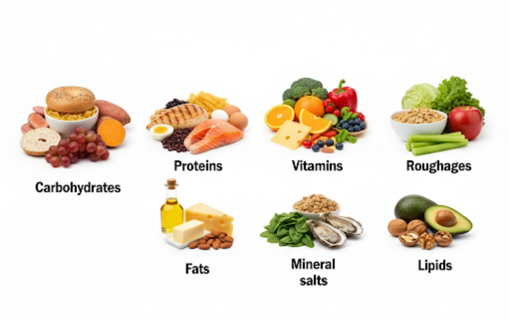
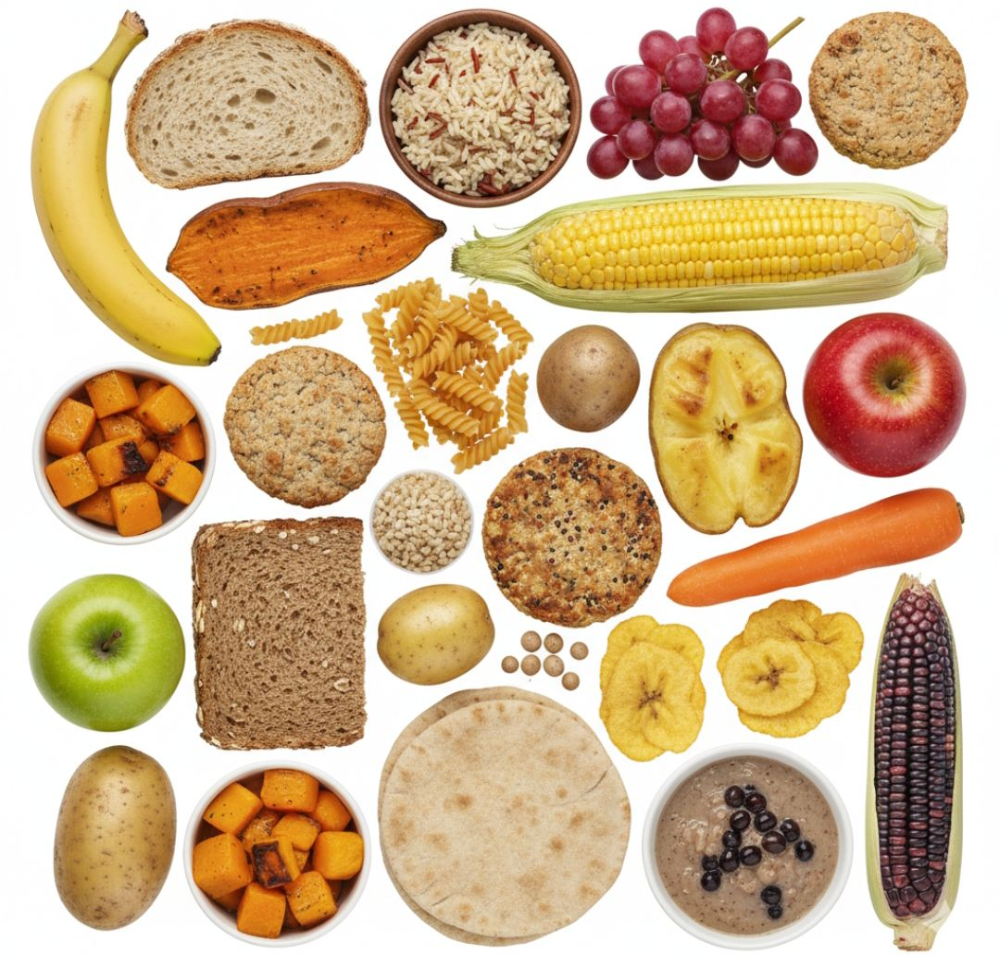
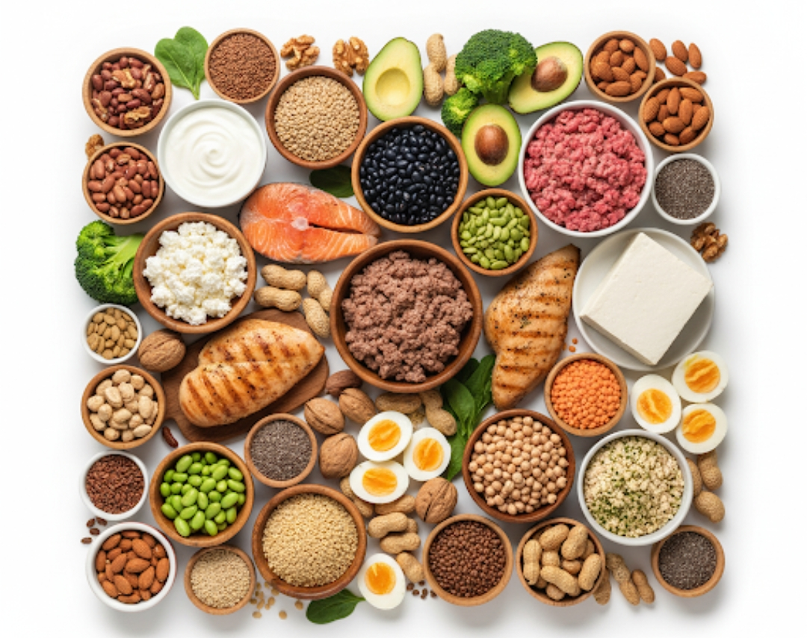
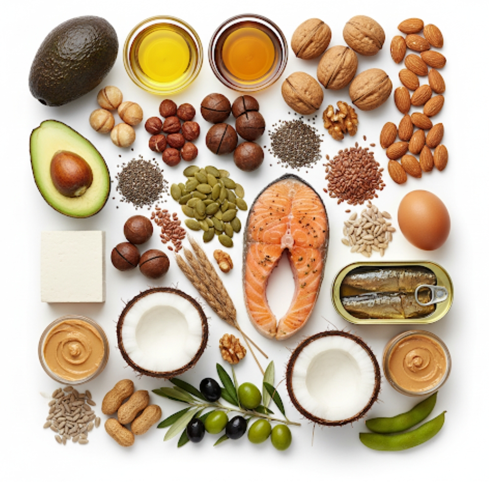
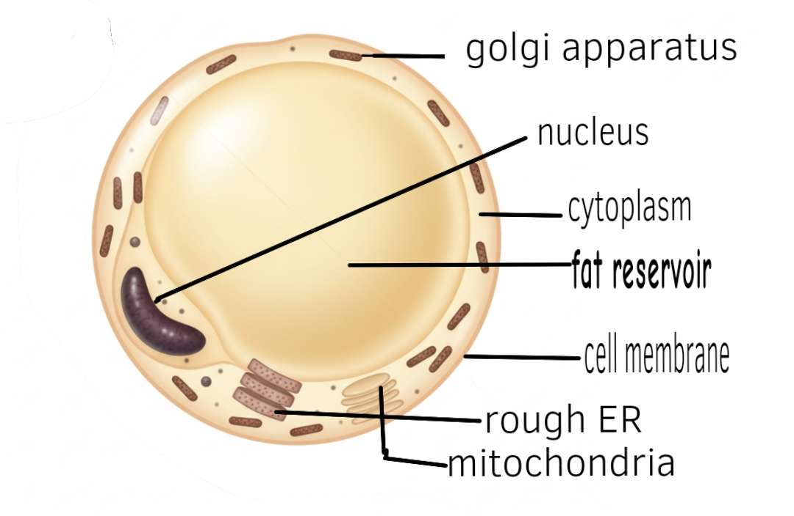
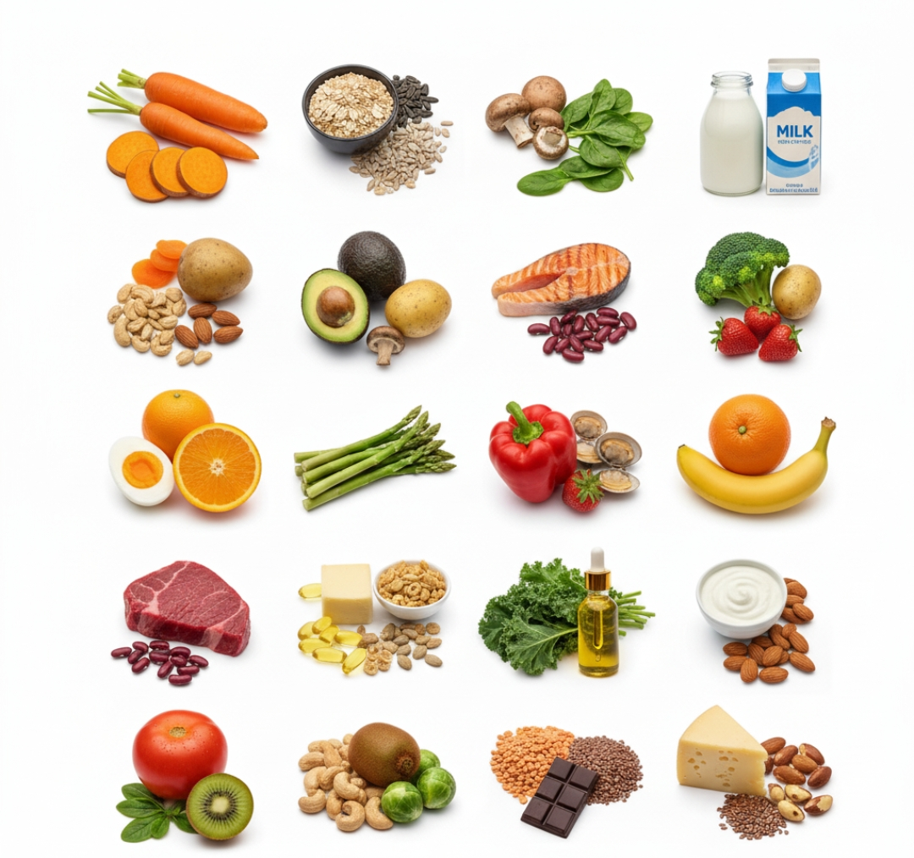
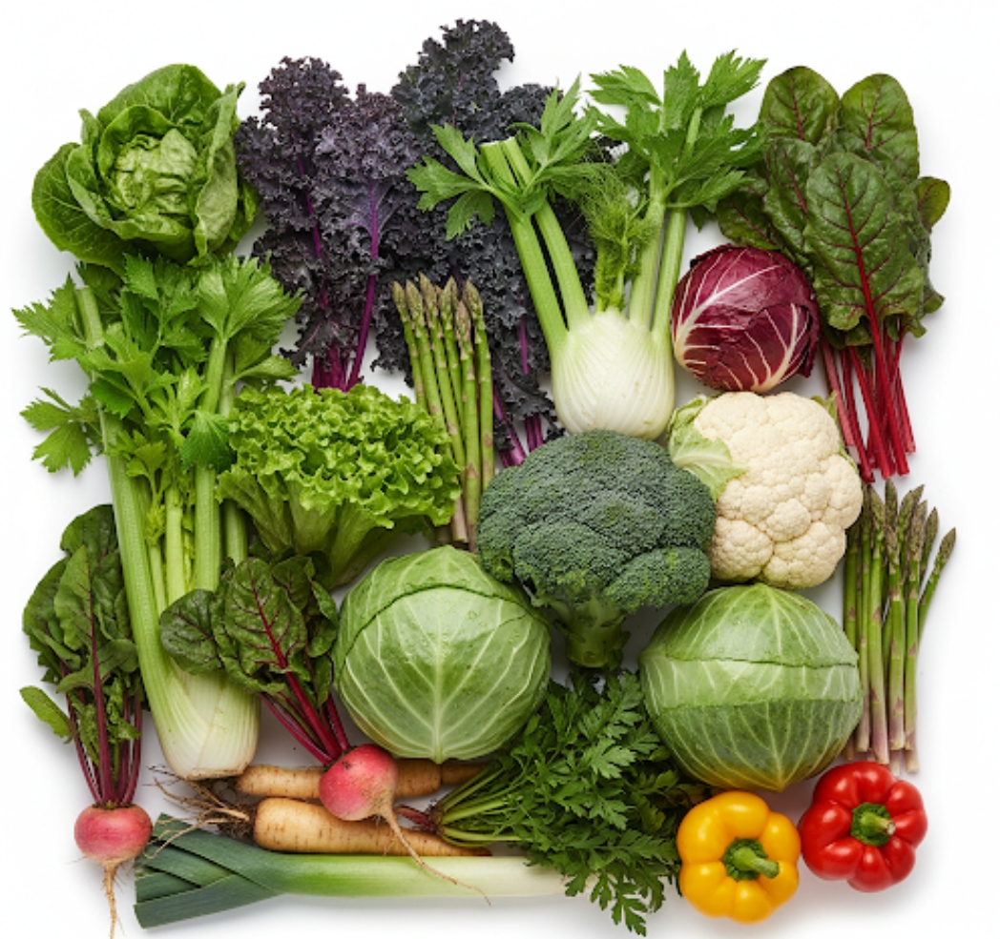
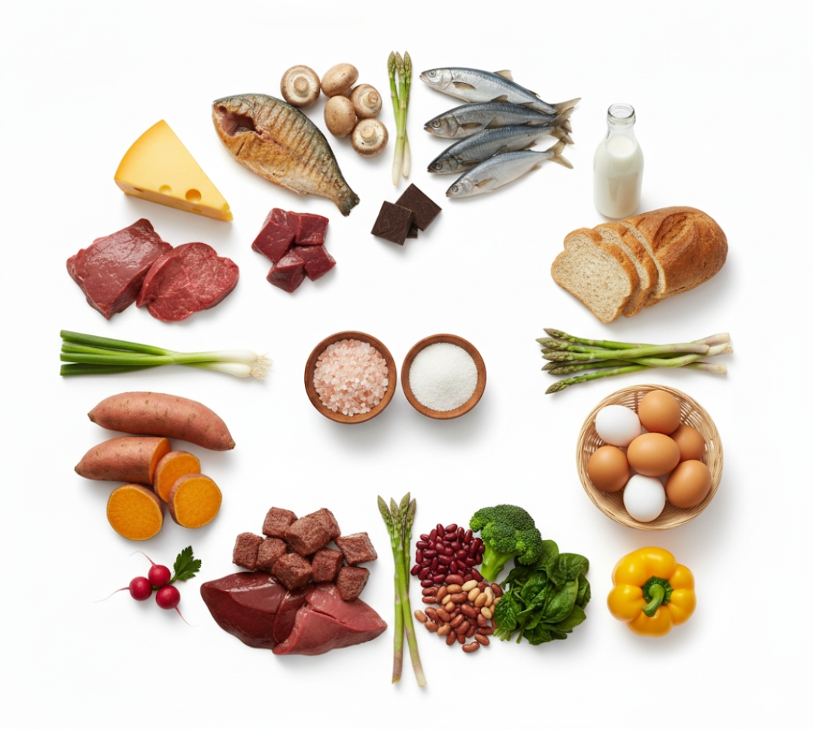
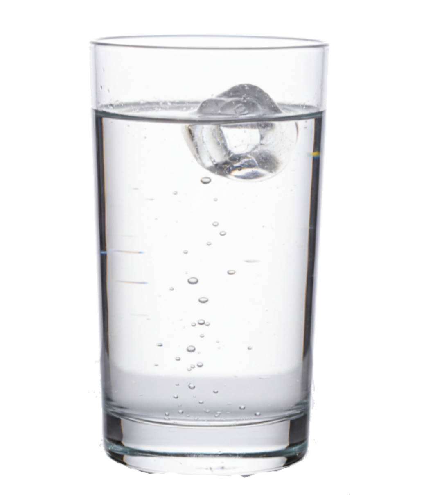

Methods of Nutrition
Nutrition is mainly made up of two parts namely;
.Heterotrophic nutrition
.Autotrophic nutrition
Heterotrophic Nutrition
This is the type of nutrition were organism feed on already made food
just like the way you can feed on yellow bananas as it's the food you eat but you didn't make it
It requires compounds of carbon and nitrogen to carry out heterotrophic nutrition
Heterotrophic organisms include; all animals, fungi, insectivorous plants and most bacteria.
There are mainly 5 types of heterotrophic nutrition;
Parasitism:
This is were a living organism depends on a fellow for both food and shelter .
Organisms of different species a parasite depends on the host for shelter and food but with out that big damage though still causing some issues like the way a tick feeds on a dog
It may not kill it right away but after some time due to the increase of the parasites and large amounts of blood being lost the dog may eventually die
Saprophytic/saprotrophic nutrition:
This a type of heterotrophic nutrition were organisms feed on dead decaying matter
Forexample
Mushroom
Mucor
Common bread mould.
Symbiosis/Mutualism;
This is a nutritional relationship between two organisms were two each has a benefit from the other but only one gains nutritionally
This should only take place between two different species
Forexample
Fungi and algae
The bacteria in the small human intestines
Protozoa and ruminants.
Egret white bird and a cow.
Holozoic
The process by which organisms take in matter (food) to be broken down into small pieces to be absorbed by the body
This mode of nutrition is normally found in mainly free living organisms which
have a specialized digestive tract.
Simple note
Herbivores; These feed entirely on plant vegetation. e.g. Cow, goat, sheep etc
Carnivores; These feed on flesh e.g. lion, cat, dog.
Omnivores; These feed on both plants and animals e.g. man and a hen.
And these are all examples of organisms that feed through holozoic nutrition
Autotrophic nutrition
This is the type of nutrition were organisms make(synthesize) their own food
Such organisms are called
Autotrophs
Autotrophs are producers because they make their own food and start the food chain
Examples of Autotrophic nutrition
Photosynthesis
Chemosynthesis
Photosynthesis
This the process by which plants make(synthesize) their own using sunlight (radiant energy)called starch
Examples inclube;
All green plants, algae, photosynthetic bacteria.
Chemosynthesis
synthesis of carbohydrate from carbon dioxide and water; limited to certain bacteria and fungi
OR
Chemosynthesis:
This is where organisms make their own food with the help of energy from specific
chemical reactions (oxidation of various inorganic compounds).
Examples include;
chemosynthetic bacteria.
FOOD
Food is a substance that can be digested and absorbed by the body to maintain metabolism

Importance of food
-
Food helps in metabolism processes
-
Food provides the necessary material for body growth
-
Food helps to keep our bodies healthy and resistant to diseases
-
Food is used to process ATP yield that that is used to eun muscles
-
Food is used in the growth of body cells which help in the repairing of warn out tissues
Classes of food
-
Energy giving foods(lipids and carbohydrates)
-
Body building foods(proteins)
-
Protective foods(vitamins,minerals)
Types of nutrients
-
Carbohydrates
-
Proteins
-
Vitamins
-
Mineral salts
-
lipids
-
Roughages
Carbohydrates

These are food of carbon, oxygen and hydrogen
They include sugar, starches, and gums
They are made up of six(6) or more carbon atoms united
with a number of hydrogen and oxygen atoms
There are three groups of carbohydrates
-
Monosaccharides
-
Disaccharides
-
Polysaccharides
Monosaccharides
This is a group of carbohydrates made up of one sugar unit
Fructose (found in honey and fruit).
is the sweetest-tasting natural monosaccharide
Examples include;
-
Glucose
-
Galactose
-
Fructose
Properties of monosaccharides
-
They have a sweet test
-
They dislove in water
-
They are made up of one sugar unity
-
They form crystals
-
They are reducing sugars because they change color in the Benedict solution
Science facts about monosaccharides
The disaccharide Lactose is composed of glucose and galactose connected by a specific chemical structure called a :β-glycosidic linkage.
Humans require the enzyme lactase to break this :β -linkage and separate the two sugars for absorption.
However, a significant portion of the world's adult population stops producing enough lactase after childhood, leading to lactose intolerance.
Disaccharides
This is a group of carbohydrates made up of two sugar units
-
Glucose + Glucose = maltose
-
Glucose + Galactose = Lactose
-
Galactose + fructose = sucrose
Properties of disaccharides
-
They are sweeter than monosaccharides
-
They form crystals
-
They are none reducing sugard
-
They are made up of two sugar units(Sacchraides)
-
They're soluble in
Science facts about disaccharides
Building Blocks: They are composed of two monosaccharide units (simple sugars) joined together.
Glycosidic Bond: The two monosaccharides are linked by a glycosidic bond (a covalent bond) formed through a process called a condensation reaction or dehydration synthesis, which releases one molecule of water (H
2
O).
General Formula: Their general chemical formula is typically
C12H22O11 (which is C6H12O6 + C6H12O6 H2O).
Polysaccharides
This is a group of carbohydrates made of three sugar units
Properties of polysaccharides include:
- Are not sweet
- Do not dissolve in water
- Cannot be crystallized
- Do not change the colour of Benedict’s solution
Examples include:
- Starch
- Glycogen
- Cellulose.
Science facts about polysaccharides
Hyaluronic Acid: A structural polysaccharide that acts as a superb lubricant. It is a major component of the synovial fluid that cushions joints and is crucial for tissue repair.
Bacterial Biofilms: Bacteria use polysaccharides to create sticky, protective layers known as biofilms (e.g., dextran forms dental plaque on your teeth).
Biodegradable Materials: Because chitin and cellulose are both incredibly strong, durable, and naturally biodegradable, they are being researched extensively to create sustainable materials, including biodegradable plastics and even dissolvable surgical sutures.
Importance of carbohydrates
-
Carbohydrates are a source of energy in which they are burnt in our bodies by the process of respiration inform of glucose
-
Carbohydrates are used in the storage of energy where excess glucose in animals which is converted into glycogen,
this is stored in the liver to maintain blood sugar or in the muscles to help in movement
-
Carbohydrates provide structural support,
for example it makes up chitin that makes up exoskeletons like that of an insect(red ant)
A Table showing how to test for reducing sugars
|
Procedure
|
Observation
|
Conclusion
|
|
Add 1cm
3
of the food solution, And add 1cm
3
add of the Benedict's solution
|
Colourless or turbid solution turned to a blue
solution, then to a green
solution, to a yellow
precipitate, to orange
precipitate and to a brown
precipitate on boiling.
Colourless or turbid
solution turned to a blue
solution which persists on
boiling.
|
Little or Moderate or
Much or
Too much; reducing
sugars present.
Reducing sugars absent. |
Examples of reducing sugars include: -
Glucose (present in grapes)
-
Fructose (present in many fruits)
-
Galactose (present in milk)
-
Maltose (present in germinating seeds)
A Table showing how to test for non-reducing sugars
|
Procedure
|
Observation
|
Conclusion
|
|
Add 1cm
3
of the food solution, And add 1cm
3
add 1cm
3
add of hydrolic acid boil, wait for the solution to cool and add 1cm
3
sodium hydroxide and finally add 1cm
3
of the Benedict's solution for the second time
|
Colourless or turbid solution turned to a blue
solution, then to a green
solution, to a yellow
precipitate, to orange
precipitate and to a brown
precipitate on boiling.
Colourless or turbid
solution turned to a blue
solution which persists on
boiling.
|
non-reducing sugars present incase the solution changes colour |
-
Sucrose (present in common sugar)
-
Lactose (present in milk)
The hydrolic acid is added a boiled to convert non-reducing sugars to reducing sugars
Sodium hydroxide or sodium carbonate is added to neutralize the solution for the Benedict solution to work properly
You should add the Benedict solution twice to test the frist time if the solution is non-reducing incase it doesn't change colour add hydrochloric acid boil, cool and add sodium carbonate or sodium hydroxide these will then convert the non-reducing sugar to reducing confirming that the solution was a carbohydrate
|
Procedure |
Observation
|
Conclusion
|
|---|
|
Add 1cm3
of the food solution and the add 3 drops of the iodine solution which is brown in colour
|
Colourless or turbid
solution turned to a black
or blue-black or blue
solution or brown
solution with black
specks.
Colourless or turbid
solution turned to a
yellow or brown
solution.
|
Starch present if it turns to black,blue-black,blue,black specks but absent if it turns yellow
|
Proteins

These are organic essential compounds for building body cells made up of amino acids
The amino acid molecule can condense to form dipeptide;
further condensation( dehydration synthesis) gives rise to polypeptide molecule (protein).
The reaction where amino acids link is called a condensation reaction
(or dehydration synthesis) because a molecule of water (H
2
O) is removed for every bond formed.
The reverse of condensation is
hydrolysis, which is the process used in digestion or when you were testing non-reducing sugars!
Hydrolysis breaks the peptide bond by adding a molecule of water.
This is how your body breaks down protein into individual amino acids that can be absorbed. Since there was a bond caused after the removal of of water to form a peptide bond between the amino acids
There are two types of amino acids namely;
Essential amino acids
These are amino acids which can be synthesized in our bodies, meaning can only be got from the deit e.g Beef, Chicken, Eggs,Soybeans
Non-essential amino acids
These are amino acids that can be synthesized in our bodies, meaning can't be got from the diet
Nb;Our bodies can make proteins from ammonia to improve immune cell function and providing energy for cells in the small intestine.
Properties of proteins
-
They disslove in water to form a sticky suspension
-
They totally denature in high temperatures
-
They have both acidic and alkaline properties
Importance of proteins
-
Protein are essential for building our bodies and take up a vast part
-
They are use to repair worn out tissues
-
They are used in all body chemical reactions like speeding up digestion since the enzymes that are meant for this are proteins in nature
-
They make up hormones like insulin that are important in coordinating the body
-
They provide structural support to cells like keratin that makes up our nails
-
They provide energy in times of starvation
NOTE:
The absence of proteins leads to a deficiency disease called
kwashiorkor.
Symptoms of kwashiorkor
- Loss of appetite
- Diarrhea
- The hair becomes soft and can easily be plucked out accompanied by loss of its
colour.
- Growth retardation
- Pot belly i.e. swollen lower abdomen
- Swollen legs and joints i.e. Oedema.
- Wasted muscles
A Table showing how to test for proteins
|
Procedure
|
Observation
|
Conclusion
|
|
Add 1cm
3
of a food solution and add 1cm
3
of sodium hydroxide add add 3 drops of copper II sulphate and then generally shake
|
Turbid solution turned to
a colourless solution then
to a violet or purple
solution.
Turbid or colourless
solution turned to a blue
solution.
|
proteins present
proteins absent
|
LIPIDS

Lipids are a large group of organic compounds that hydrophobic(water fearing) and insoluble in water
Fats provides good insulation because of its low
thermal(heat) conductivity
This is why they are so good at insulating the body
The lipid is stored as a
triglyceride, which is a highly efficient, compact, and a hydrophobic(water-free) way to store energy.
Adipocytes(adipose), commonly known as fat cells, are specialized connective tissue cells whose primary function is to store energy in the form of lipids (fats). They aggregate to form adipose tissue (body fat), which is now recognized as a vital endocrine organ.
Glycerol forms the "backbone" to which three fatty acid molecules are attached. This is the molecule used for energy storage in fat cells.
When the body requires energy between meals, hormones signal the fat cell to break down the stored lipids into fatty acids and glycerol, which are then released into the bloodstream to be used as fuel by other tissues.
Fats differ from oils in that they are solids at room temperature whereas oils are
liquids at room temperature (25°C).
A fat cell(adipose)

Properties of lipids
-
They are extremely hydrophobic
-
They have extremely low thermal conductivity
-
They have both a nonpolar (hydrophobic) tail and a polar (hydrophilic) head.
Polar molecules are simply molecules with uneven electrical charge distribution just like how Oxygen pulls electrons much harder than hydrogen, making the oxygen side negative and the hydrogen sides positive. This is why water dissolves salt and sugar. and nonpolar have got evenly distributed electrical charge
Functions of lipids
-
Waxes, a type of lipid, provide water-repellent and protective coatings on the leaves of plants and the skin of animals
-
This stored fat serves as the body's major energy reserve
-
Some lipid are used to separate the cell's internal environment from the outside and the inner parts within the cell.
-
In some areas of animals they act as shock absorbers
-
Prevent water loss and entry in cells and tissues
A Table showing how to test for lipids
i)The emulsion test
|
Procedure
|
Observation
|
Conclusion
|
Add 1cm
3
of a food solution and add 1cm
3
of ethanol and shake and then add 5 drops of water and shake again
|
The turbid solution turns creamy
Turbid or colourless
solution remains a
turbid
|
Lipids present
Lipids absent
|
ii)Translucent spot test
|
Procedure
|
Observation
|
Conclusion
|
Add three drops of a food solution onto a filter paper.Let it dry for over 10 minutes |
A translucent spot or
patch is left on the
paper.
No translucent spot is
formed on the paper and the paper dries |
Lipids present
Lipids absent
|
VITAMINS

These are organic compounds that we need in low quantities (micro-nutrients) for metabolism, growth and development
I. Fat-Soluble Vitamins (A, D, E, K)
These vitamins dissolve in fat and are absorbed along with fats in the diet.
They can be stored in the body's fatty tissue and liver, meaning you don't need to consume them every day, but also that excessive intake can lead to toxicity
| Vitamin |
Primary Function (The Role) |
Common Sources |
| A (Retinol) |
Essential for vision (forms rhodopsin in the retina), immune function, cell growth, and healthy skin. |
Liver, fish oils, eggs, dairy, and orange/yellow vegetables (as beta-carotene). |
| D (Calciferol) |
Acts like a hormone to regulate calcium and phosphorus levels, crucial for bone mineralization and immune health. |
Oily fish, fortified milk/cereals, and the action of sunlight on the skin. |
| E (Tocopherols) |
A powerful antioxidant that protects cell membranes from damage by harmful free radicals. |
Vegetable oils, nuts, seeds, and leafy green vegetables. |
| K (Phylloquinone) |
Essential for the synthesis of proteins required for blood clotting (coagulation). |
Green leafy vegetables (like kale and spinach) and some plant oils. |
II. Water-Soluble Vitamins (B-complex and C)
These vitamins dissolve in water. They are generally not stored in the body, and any excess is typically excreted in the urine.
This means you need a regular daily supply. They are primarily known for acting as Coenzymes
| Vitamin |
Primary Function (The Role) |
Common Sources |
| C (Ascorbic Acid) |
A strong antioxidant, critical for collagen production (for skin, bone, and connective tissue), and enhances iron absorption. |
Citrus fruits, strawberries, peppers, and broccoli. |
| B1 (Thiamine) |
Necessary for energy metabolism; helps convert food (especially carbohydrates) into fuel. |
Whole grains, pork, nuts, and legumes. |
| B2 (Riboflavin) |
Plays a key role in energy production and cellular function. |
Dairy products, eggs, meat, and fortified cereals. |
| B3 (Niacin) |
Involved in DNA repair, steroid hormone production, and converting food to energy. |
Meat, fish, nuts, and enriched breads/cereals. |
| B5 (Pantothenic Acid) |
Critical for synthesizing coenzyme A (CoA), essential for fatty acid metabolism. |
Widespread in foods (the name comes from the Greek for "from everywhere"). |
| B6 (Pyridoxine) |
Key in protein and red blood cell metabolism, and immune function. |
Poultry, fish, bananas, and starchy vegetables. |
| B7 (Biotin) |
Essential for metabolism of carbohydrates and fats, and gene regulation. |
Eggs, nuts, salmon, and whole grains. |
| B9 (Folate/Folic Acid) |
Necessary for making DNA and new cells, especially critical during periods of rapid growth (e.g., pregnancy). |
Leafy green vegetables, beans, and fortified grains. |
| B12 (Cobalamin) |
Essential for the proper function of the nervous system and the formation of red blood cells. |
Found almost exclusively in animal products (meat, fish, dairy, eggs). |
The collective function of vitamins is to act as
catalysts (accelerators) and regulators for all the chemical reactions (metabolism) that keep us alive. Without them, our body's machinery
Vitamin D:
Vitamin D is unique because it acts more like a hormone than a traditional vitamin and the primary source for most people is its synthesis in the skin.
The production of Vitamin D in your body is a two-step process involving the skin, liver, and kidneys
Vitamin C:
Vitamin C is scientifically known as
Ascorbic Acid is a
water-soluble vitamin that is not stored in the body and must be regularly consumed
Vitamin C is a potent antioxidant, meaning it neutralizes harmful free radicals and protects cells from oxidative stress.
Vitamin C is an essential cofactor for the enzymes that produce collagen, the most abundant protein in the body
A Table showing how test for Vitamin C
|
Procedure
|
Observation
|
Conclusion
|
|
1cm
3
of DCPIP was added into a test tube , continuously add a food solution wisely
|
The blue DCPIP turns colourless
No colour change is observed
|
Vitamin C present
Vitamin C absent
|
When they mix, the Vitamin C chemically changes the DCPIP by donating electrons to it. This reaction transforms the blue DCPIP dye into a different, colorless chemical compound
While you are slightly diluting the solution, the overwhelming factor that indicates the end of the test is the chemical consumption of the blue dye by the Vitamin C.
Roughages/Dietary fiber
They are indigestible materials in food and consist mostly of cellulose, pectin, and
lignin.

Lignin is one of the most important and abundant organic polymers on Earth, found primarily in the cell walls of
It plays a vital structural and protective role in plant biology.
Roughage is another term for dietary fiber. It is the edible, but largely indigestible, portion of plant foods.
Pectin is naturally occurring carbohydrate that makes up cell walls and it's found in almost all terrestrial plants (plants found on land) and
it's not digested in the upper tract but fermented by bacteria in the large intestines
Functions of these dietary fiber
-
They help in proper digestion of food in our bodies
-
They regulate blood sugars
-
They help in weight management
-
The deficiency or lack of roughages causes constipation.
Mineral Elements and Salts

These are
inorganic food materials needed in our bodies in law quantities to develop and function normally
Minerals are vital Non-energy yielding micro nutrients
Mineral elements are classified based on the quantity needed by the body:
Essential or Major Minerals (Macrominerals)
| Mineral |
Sources |
Importance |
Deficiency (Impact) |
| Calcium |
Dairy, leafy greens, fortified foods. |
Bone and teeth structure, muscle contraction, blood clotting. |
Osteoporosis, rickets (in children), muscle spasms. |
| Sodium |
Table salt, processed foods, soy sauce. |
Fluid balance, nerve impulse transmission, muscle function. |
Hyponatremia (weakness, confusion, seizures). |
| Potassium |
Bananas, potatoes, spinach, beans. |
Fluid balance, nerve signaling, heart rhythm regulation. |
Hypokalemia (muscle weakness, irregular heartbeat). |
| Magnesium |
Nuts, seeds, whole grains, dark chocolate. |
Enzyme reactions, energy production, bone health. |
Muscle cramps, fatigue, abnormal heart rhythms. |
| Phosphorus |
Meat, fish, dairy, eggs. |
Bone health, component of DNA and ATP (energy). |
Rare, but can cause bone pain and muscle weakness. |
Non essential or Trace Elements (Microminerals)
| Mineral |
Sources |
Importance |
Deficiency (Impact) |
| Iron |
Red meat, beans, lentils, fortified cereals. |
Forms hemoglobin for oxygen transport in blood. |
Anemia (fatigue, weakness, pale skin). |
| Zinc |
Oysters, red meat, poultry, beans, nuts. |
Immune function, wound healing, DNA synthesis, growth. |
Impaired immune function, hair loss, poor wound healing. |
| Iodine |
Iodized salt, seafood, dairy. |
Necessary for thyroid hormone production (metabolism). |
Goiter (enlarged thyroid gland), hypothyroidism. |
| Selenium |
Brazil nuts, seafood, meats, whole grains. |
Antioxidant protection, thyroid function. |
Keshan disease (heart condition), impaired immunity. |
| Copper |
Shellfish, nuts, seeds, whole grains. |
Iron metabolism, energy production, antioxidant defense. |
Anemia, bone abnormalities. |
Water
Water is a compound made up of hydrogen and oxygen which is the most abundant compound in our bodies, 50% to 75% of our bodies is made up by water

Fluid from Food: About 20% of your total fluid intake typically comes from the foods you eat, especially water-rich fruits and vegetables (like melons, cucumbers, and lettuce).
Water is not a nutrient you eat for energy, but it's the absolutely critical solvent and reaction medium that allows all other nutrients (and the body itself) to function correctly.
Staying properly hydrated is foundational to good nutrition and overall health.
Men should take approximately 3.7 litters of water
Women should take approximately 2.7 litters of water
From plain water, other beverages, and food
Importance of water
-
Water is a universal solvent that is absorbed by food with which it is transported around the body
-
Water is use in regulation of body temperature were it's excreted as sweats
-
Food softens food to ease digestion
-
Water is used in metabolic processes e.g photosynthesis and respiration
-
Water is used in seed disposal
-
It acts as a Lubricant (a fluid that reduces friction)e.g. salvia lubricant the mouth, tears lubricate eyes,
synovial fluids lubricate the joints
Properties of water
-
Water is made of polar molecules(H2O) which makes one side slightly positive(H) charge and the Oxygen slightly negative
-
Water molecules are attracted to other polar or charged surfaces like glass(adhesion)
-
Water molecules are attracted to fellow water molecules via hydrogen bonds (cohesion)
-
The forces of cohesion and adhesion alow capillary action of water molecules(upward movement of water in a narrow tube)
-
Waters reduces density when frozen (ice)
-
Water increases volume when frozen
-
Water has a neutral pH
-
Water boils at 100°C and freezes at 0°C
-
Water is a universal solvent
-
Water is odorless
-
Water is colourless
Enzymes
Enzymes are biological catalysts which speed up the rate of chemical reactions. Their role is vital for all metabolic processes such as digestion,and energy production
How enzymes work
For enzymes to work (accelerate any metabolic process) they should
Lower the activation energy (Ea) required for any reaction to start
-
Binding: The molecule the enzyme binds with is called a Substrate.The substrate binds to the active site on the enzyme
-
Specificty:Enzymes are specific and they bind with specific substrate that can fit in their active part much more like a lock and key(Though enzymes can change shape at approach with the substrate)
-
Catalysis:The enzyme holds the substrate in the right place needed and stressing it's chemical bonds which lowers the starting energy barrier(Transition State)for the reaction
-
Release and reuseOnce the reaction is complete the enzyme releases the product it then goes back to it's original shape and ready to bind with another substrate
Importance of enzymes
It's mean importance is that it is a catalyst for all
metabolic processes examples include:
-
It is essential in digestion as it breaks down food to small units
-
It manufactures energy for cells(ATP)
-
It is essential to the immune of our bodies
-
Clean up poisons (detoxification)
-
Allows movement(muscles) and brain signals
-
Enzymes can be used to measure glucose levels in our bodies
-
Detergents contain proteases (an enzyme that breaks down proteins) and lipases (an enzyme that breaks down fats)to break down food stains.
Classification of enzymes
Enzymes are classified depending on the reaction they catalyze
-
Isomerase;
these catalyze reactions involving isomerism
-
Phosphorylases;
these catalyze reactions involving addition of a phosphate
-
Hydrogenases;
these catalyze reactions involving addition of hydrogen.
-
Dehydrogenase;
these catalyze reactions involving removal of hydrogen.
-
Kinases;
these catalyze reactions involving movement of molecules from one
area to another.
-
Carboxylases; these catalyze reactions involving addition of Carbon dioxide.
Enzymes can also be described as intercellulars and extracellulars
Intercellular enzymes
are those that catalyze reaction inside the cell ,e.g all respiratory enzymes.
Extracellular enzymes
these are enzymes produced by the cell to catalyze reactions outside the cellenzymes ,e.g all digestive enzymes.
Nomenclature of enzymes
Enzymes are named by adding a suffix “ase” to their substrates. A substrate is a
substance, which the enzyme acts upon by applying chemical stress to it's chemical bonds
|
substrate
|
enzyme
|
|
peptides
|
peptase
|
|
Sucrose
|
sucrase
|
|
lipids
|
lipase
|
|
cellulose
|
cellulase
|
|
maltose
|
maltase
|
Some enzymes however retained their names they had before this convention.
Such enzymes include
pepsin
and
trypsin.
Sometimes the enzymes digesting carbohydrates are generally called
carbohydrases
and those digesting proteins as
proteases